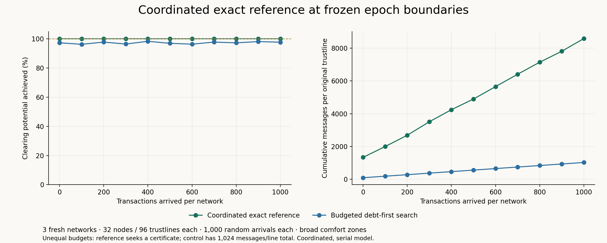

20 October 2026. Fresh synthetic seeds 501–503; each network has 32 nodes and 96 original undirected trustlines. Research implementation; no app or demo configuration changes.
This coordinated, path-disclosing research reference is separate from the coordinator-free, neighbour-private product target. The objective is 100% of feasible clearing potential, not enumeration of every possible loop. Loops overlap, and settling one changes what remains. The reference seeks a negative-cost residual cycle, settles one unit with bilateral comfort checks, and repeats until a completion certificate or the safety ceiling.

| Comfort | Mode | Method | Potential achieved | Messages/line | JSON MiB | Actor runtime s | Certified epochs |
|---|---|---|---|---|---|---|---|
| broad | arrivals | Budgeted debt-first search | 97.73% | 1023.9 | 367.53 | 14.264 | 0/33 |
| broad | arrivals | Coordinated exact reference | 100.00% | 8586.1 | 139.03 | 26.231 | 33/33 |
| broad | static | Budgeted debt-first search | 99.82% | 1023.9 | 361.21 | 14.080 | 0/3 |
| broad | static | Coordinated exact reference | 100.00% | 1336.8 | 21.48 | 4.014 | 3/3 |
| narrow | static | Coordinated exact reference | 85.48% | 940.8 | 15.13 | 2.720 | 3/3 |
Percentages pool savings and potential across three seeds; costs are means per network. Communication includes search and settlement. Runtime is one illustrative sample per run, summing network construction, transfer processing and clearing; offline oracle, audit and result serialization are excluded.
Each broad-zone arrival run receives 1,000 transfers: the first 1,000 events of a Poisson process at rate 25 per simulated time unit, uniform original trustlines, signed amounts ±1, ±2 or ±3. All 96 trustlines receive arrivals in each network. Clearing occurs initially and after each 100 arrivals, for 11 frozen epochs. Arrivals are buffered during service. This measures complete epoch snapshots, not real-time throughput or completion while balances are changing.
The coordinated exact reference has a 2,000,000-message total safety ceiling per run. The existing debt-first control has 1,024 messages per trustline total, spread across the same epochs with unused credit carried. These are deliberately different stopping rules: the table exposes the price of a certificate rather than claiming a matched-budget speedup. Budget exhaustion is retained as incomplete.
For every epoch, replay the same accepted transaction prefix without clearing to obtain gross debt D; an offline hard-bound min-cost flow gives D*. Potential achieved is (D−actual debt)/(D−D*). This is snapshot saving, not cumulative settled volume. Initial gross debt plus absolute offered volume is below the generous 10,000-unit hard grants, ensuring every offered transfer is feasible in both models.
The coordinated exact reference uses distributed Bellman–Ford messages, supplied network membership and a fixed epoch coordinator. Participants inspect their own bilateral state and received neighbour messages, including disclosed paths. The coordinator holds balances fixed, chooses one discovered cycle, and completes staged prepare/commit/cleanup before searching again. Setup, search coordination and settlement traffic are counted; reliable delivery and synchronous service are simulator assumptions. This establishes a coordinated exact reference, not coordinator-free or neighbour-private execution.
The coordinator decides from counted tree reports and received cycle witnesses. The full collection of node potentials and incidence checks is exported separately by the simulator for independent audit; that global audit export is not an actor's routing input. The final counted certificate broadcast announces completion, rather than distributing this entire audit artifact.
With broad zones equal to hard bounds and bilateral helper consent, no negative residual cycle is the optimality condition for the minimum-gross-debt flow. Integer unit improvements make progress finite. The underlying min-cost-flow criterion is described in MIT's cycle-cancellation notes; adapting it to these local messages and comfort rules is this experiment's implementation and proof obligation.
Narrow zones can deny required helper moves. A certificate then means no currently admissible improving unit cycle; it does not establish the hard-limit optimum or the best outcome reachable through all possible earlier comfort choices. The percentage denominator remains the relaxed hard-limit ceiling.
A live deployment needs agreed membership or sound distributed termination detection, versioned snapshots or reservations against arriving transfers, durable settlement and recovery under failures, and a communication protocol that meets the app's privacy requirements. Current search tokens disclose paths; this is not the neighbour-private hashlock protocol. The epoch coordinator selects only from received witnesses, but its scheduling and reliability remain explicit research assumptions.
Worst-case cost can be high: complete cycle searches require communication across the network, and unit settlement may repeat many times. Batching safe amounts and reusing search information are performance opportunities that would need separate correctness checks.
Presentation labels were corrected to “Coordinated exact reference”; frozen actor sources, prospective plan/workloads, measurements and independent audit are unchanged. See package notes for the presentation-only correction.
Python 3.12.14, NetworkX 3.5; exact source, plan and workload hashes in comparison.json. All completed settlements and offered transfers are retained for independent replay; every claimed broad optimum is checked against a separately certified oracle and residual certificate.